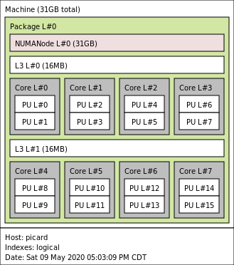
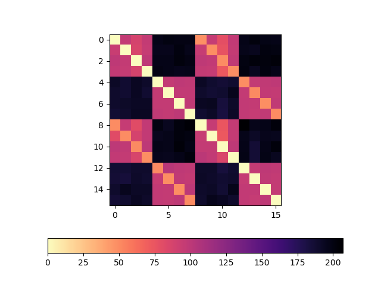
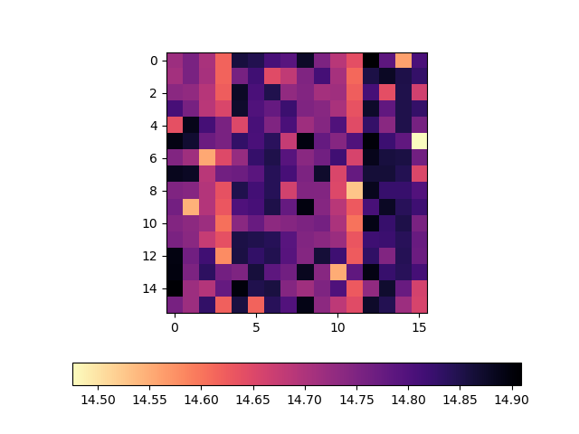
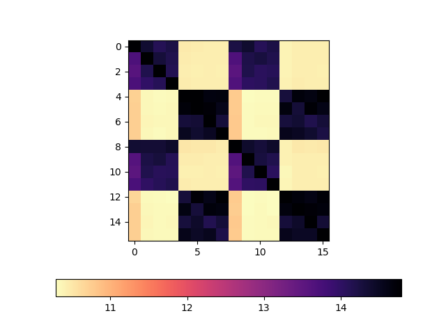

AMD Zen Memory Latency/Bandwidth Considerations
I've built a micro-benchmark which sends data between CPU 2 cpu cores. On my single AMD 3800X desktop CPU, I have crafted a microbenchmark which has different performance characteristics depending on pair of cores I select for testing.
Results like this should not be surprising on a multi-socket system, but this system has only a single processor. I believe this micro-benchmark is highlighting some of the features of the novel architecture on the new AMD chips.
Caches
Before diving in to Zen, I'd like to talk briefly CPU memory-caching systems.
Modern CPUs contain a variety of fast memory which cache accesses to the larger more expensive RAM. Usually we call the fastest, smallest cache L1, the next fastest L2, and the largest, but slowest cache L3. These caches communicate with each other to move data around (see MESI protocol).
Assume for simplification that the L3 cache knows how to get data from main memory or from the L1 and L2 caches. Also assume that the L3 cache is the only part of the memory system which is able to talk main memory.
If Core 0 wants to read from memory, it will ask the local L1 cache to perform the read. If the data is in the L1 cache, the cache sends the data to the CPU registers. If the data is not in the L1 cache, the cache asks L2. Finally, the L2 cache asks L3 and the L3 cache goes and fetches the data.
Next, assume that all data is written into the L1 cache then propagated out to other caches or main memory as needed. When the L1 cache is out of space, it will evict the data into the L2 cache. When the L2 cache is out of space, it will evict the data into the L3 cache. Finally, if L3 runs out of space, it will evict the data back to main memory.
Generally, each CPU has it's own L1 and L2 cache, but the L3 cache is shared by all of the cores. Something like this:
/-----------------------------------\
| |
| L3 cache (shared by all cores) |
| |
+--------+--------+--------+--------+
| | | | |
| L{1,2} | L{1,2} | L{1,2} | L{1,2} |
| | | | |
+--------+--------+--------+--------+
| | | | |
| Core | Core | Core | Core |
| | | | |
\--------+--------+--------+--------/
This style of L1/L2/L3 cache has been common in CPU designs for many years.
Ryzen Architecture
To talk about AMD's Zen architecture, there's a few terms we need to define:
- CCX: Core Complex. Contains a max of 4 cores and a slice of the L3 cache.
- CCD: Core Chiplet Die: A single die which contains 2 CCX (on Ryzen 3/5/7)
- IO controller: A separate die containing DDR controllers, PCIe controllers. Also the hub for the "Infinity Fabric"
- Infinity Fabric: High performance interconnect connecting CCXs
Each Ryzen processor has one IO controller and some number of CCD dies. This CCD/CCX/IO controller strategy allows AMD to mass produce CCD chips, performance/correctness test the cores (this is called "binning"), then build a wide variety of different processor configurations.
The particular Ryzen 3800X I own has a single IO controller and a single CCD. The CCD contains two CCXs. Each CCX in my particular CPU has all 4 physical cores enabled. Each of those physical cores is capable of running two threads (see Simultaneous Multithreading (SMT)).
Here's how this looks in hwloc's lstopo output:

Interpreting the output, we can see that:
- CCX1 contains the cores that the OS calls 0, 1, 2, 3, 4, 5, 6, and 7
- CCX2 contains the cores that the OS calls 8, 9, 10, 11, 12, 13, 14, and 15
This likely means that cores in the same CCX can communicate with each other by reading and writing to their shared L3 cache. If cores from different CCXs need to communicate, they will have to use the infinity interconnect.
Latency Test
To verify my hypothesis, lets start with a classic pingpong roundtrip latency test.
This test runs two threads. The first thread flips a value in memory to some value "Ping", then waits to see another value "Pong." The second thread waits to see "Ping", then flips the value to "Pong."
The first thread starts timing right before sending "Ping", and stops timing once it sees "Pong."
I've plotted the mean core-to-core pingpong round-trip time for all pairs of cores (including the SMT cores). Latency for A->B and B->A were both tested (for no particular reason).
That is:
for core1 in cores: for core2 in cores: if core1 == core2: continue # skip self, both threads spin results[ (core1, core2) ] = mean_of_many_tests( core1, core2 )
This plot is a heatmap of core->core pingpong roundtrip time, in nanoseconds: 
As we can see, there's a clear difference in round-trip latency between pairs of cores in the same CCX and pairs of cores in a different CCX. For example, core 0->core 3 round-trip latency is pinkish, but core 0->core 4 latency is dark blueish. The actual values I got around ~96ns for 0->3 and ~196ns for 0->4.
I do not have a good explanation for the upper and lower diagonal lines (at around 48ish ns), but, we can clearly see that pairs of cores for which latency was low share a common L3 cache (they are in the same CCX).
For full details about this benchmark, please see the source and my results here.
So, we know that there is a difference in latencies, but, does this really matter? Few applications actually have any reason to bounce a single value back and forth between cores.
Bandwidth Test
When discussing latency, programmers who are more bandwidth focused will often (rightly) say something like "the latency doesn't matter, I only care about bandwidth." Most programmers are more focused on bandwidth than latency, because generally we care a lot more about throughput than latency.
Baseline with large core-to-core copies
Let's start by proving that, when moving around large chunks of data, none of this matters.
I've created a small tester which:
- binds to a core
- allocates memory on the core
- writes to every byte of the memory on the core
- binds to another core
- copies all of the memory into a new region of memory
The region of memory that I am copying is 4 gigs large.
This is much larger than any of the local caches.
We should be able fire off a memcpy then sit back while the hardware prefetchers and cache hierarchy work their latency-hiding magic.
Here's the plot: 
As we can see, we're pretty much getting a ~14.5-15 GiB/s copy rate regardless of the cores selected. This is good news. The new AMD core layout makes no difference when copying around 4 gig chunks of data.
For full details about this benchmark, please see the source and my results here.
When might it matter?
We are often able to amortize high latency operations over large transfers or by work on something else to hide the costs of high latency. However, as data sizes shrink, it becomes harder and harder to hide latency.
Recently, it seems like (anecdotally) there has been a trend of using queues to move data/send commands in throughput-oriented applications.
- The Jack audio system uses ring buffers to transfer audio samples between multiple communicating applications
- A number of async IO libraries use thread pools, event queues, and work stealing scheduling
- Go's channels are fundamentally just queues between concurrent (sometimes running in parallel) threads
- Erlang's fundamental abstraction is threads that communicate over queues
- etc..
When messages sent over these queues are small, we might be able to observe Ryzen's latency characteristics as a drop in throughput.
I've built a simple microbenchmark to test this. The benchmark runs a writer thread and some number of reader threads. The threads share a region of memory that contains a bunch of "chunks". The array of chunks looks sort of a like a single producer, single consumer queue:
typedef struct { uint64_t ready; char padding[ CACHE_LINE_SIZE - sizeof( uint64_t ) ]; char data[ N_DATA_LINES*CACHE_LINE_SIZE ]; } chunk_t;
The ready marker acts like a boolean.
The ready marker always sits at the start of a cache line.
The size data of the data region is always some multiple of the cache line size.
Padding is introduced to ensure that the data region and the ready marker are not ever in the same cache line.
In pseudocode, the writer looks something like this:
for( size_t i = 0; i < N_CHUNKS; ++i ) { populate_chunk_data( &chunks[i] ); // signal that the reader should read the data atomic_store( &chunks[i].ready, true ); }
The reader looks something like this:
for( size_t i = 0; i < N_CHUNKS; ++i ) { // Wait for the chunk to be ready while( !atomic_load( &chunks[i].ready ) ) { } read_and_discard_data( &chunks[i] ); }
In theory, chunk transfer will occur one at a time when the reader and the writer are running at more or less the same speed. If the reader falls behind the writer, the writer should be able to plow ahead with its writes and the reader should be able to continue reading until it catches up or finishes.
In the benchmark, I've placed the array of chunks into a 2 megabyte huge page. I created a region containing 8192 chunks, and each chunk's data segment contains 8 cache lines (512 bytes) of data. The number of chunks doesn't seem to affect the benchmark much, but the size of the data segment does. I've kept the size low to highlight the effects I'm looking for, but, these effects seem to still be present for data sizes up to a few KiB.
Results
Using the same style of plots that we've already see, let's first look at bandwidth reported by the writer. This plot shows the write rate when Y-axis core is sending data to X-axis core (rate is in GiB/s, I've again included the SMT cores):
- When core 0 (CCX1) writes to core 2 (CCX2), writer rate is ~14.2 GiB/s
- When core 0 (CCX1) writes to core 4 (CCX2), writer rate is ~13.9 GiB/s
- When core 0 (CCX1) writes to core 5 (CCX2), writer rate is ~14.0 GiB/s
There's some patterns in this plot that I have not been able to explain, but, there doesn't seem to be any significant variation in write rate when the reader core is on a different CCX. I'm reasonably confident claiming that the writer is unaffected by choice of core.
Here's the rates that the reader reported: 
From the reader's perspective, the differences are stark. When the reader and writer share an L3 cache (are in the same CCX), we consistently see a read rate around 13-14 GiB/s. When the reader and writer do not share the L3 cache (are in different CCX), the read rates are consistently lower, around 10-11 GiB/s.
This is a significant enough difference to warrant careful attention when building high performance software.
For full details about this benchmark, please see the source and my results here.
Conclusions
This sort of behavior will not come as a surprised for programmers used to programming for multi-socket (multiple physical CPU) server systems (see NUMA). However, for those writing parallel applications, I feel like this effect is still notable and warrants slightly different considerations than traditional NUMA.
In a traditional multi-socket/multiple-physical CPU system, RAM is physically connected to only one of the many CPUS. If core0 of cpu0 needs to access memory physically attached to cpu1, it will pay a latency penalty to access this memory (this is NUMA - Non-Uniform Memory Access). However, we've also generally assumed that core0 can access any part of memory attached to cpu0 with the same latency. Therefore, applications built for NUMA architectures often focused on getting their data into the memory CPU attached to a CPU, then using the cores on that CPU to process the data.
For platforms like AMD's (and recent Intel, see Intel Mesh) we have to now make NUMA-style considerations any time we are operating over a piece of data on multiple cores, not just when dealing with multiple sockets.
Consider the specs for the EPYC 7542:
- 32 cores
- 512 KiB L2 d-cache per core
- 128 MiB L3 cache for the entire chip
On the 7542, we have to divide this 128 MiB of L3 cache up into CCX cache slices. Assuming each CCX has 4 cores (which I think is correct), we'd have 32/4=8 CCXs on this CPU. Therefore, each CCX (4 cores) only has 16 MiB of "close L3 cache memory," accessing the rest of the cache will incur a small amount of extra latency.
For comparison, a 2016 Intel Broadwell Xeon could be configured with 22 cores and 55 MiB of L3 cache. This means that the AMD has a core/fast-shared-l3 ratio of 0.25 MiB/core and the Broadwell has a core/fast-shared-l3 ratio of 2.5 MiB/core. Building high performance code with 2.5 MiB of super fast shared memory per core is a slightly different game than building high performance applications with only 0.25 MiB of super fast shared memory per core.
I suspect that "networked" cpu architectures will become the new normal in the next few years. These new platforms are going probably going to be increasingly more and more sensitive to data access and data movement than the systems of the past.